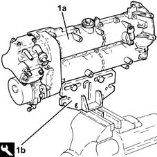
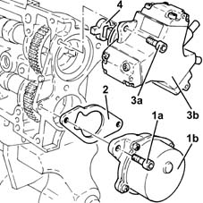
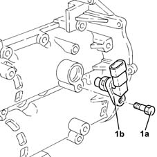
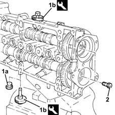
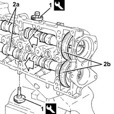
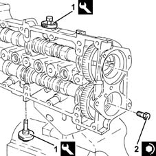
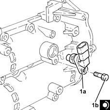
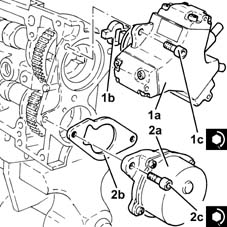

1036C14 camshaft in cylinder head - r r with head removed
- Path
- Procedures > 10 ENGINE > 1036 TIMING SYSTEM > 1036C overhead camshafts (2) > 1036C14 camshaft in cylinder head - r r with head removed
- Kind
- repair procedure (removal / refitting; the operation number is the code)
- Applies to
- engines: 1.3 JTD; all production periods
- Interactive page
- https://sloeber94.github.io/elrnDB-lYpsln/en/#/2429769
Applies to: engines: 1.3 JTD; all production periods
 Removing
Removing
 Refitting
Refitting1. Position the upper cylinder head (1a) in the vice using the tool (1b).
 | Name | Country |
|---|---|---|
1b | Mount | 1.860.470.001 |

Applies to: engines: 1.3 JTD; all production periods
1. Undo bolts (1a) and remove vacuum unit (1b).
2. Remove the gasket.
3. Undo the bolts (3a) and remove the pressure pump (3b) complette with O-Ring.
4. Remove the coupling.

Applies to: engines: 1.3 JTD; all production periods
1. Undo the bolts (1a) and remove the cam angle sensor (1b).

Applies to: engines: 1.3 JTD; all production periods
Temporarily remove the tool fitted previously on the exhaust side camshaft.
| Name | Country |
|---|---|---|
- | Gauge | 1.870.896.900 |
Check that the end float of the camshaft is within the recommended values using a dial gauge.
 | Measurement | Value | |
|---|---|---|---|
- | End float (mm) | 0.15 ÷ 0.34 |
If the end float of the camshaft is not within the recommended values, when reassembling the cylinder head, replace the worn components.
1. Remove the plug (1a) and fit the tool (1b) on the inlet side camshaft.
| Name | Country |
|---|---|---|
1b | Gauge | 1.870.896.900 |
2. Undo the camshaft gear fixing bolts.

Applies to: engines: 1.3 JTD; all production periods
1. Remove the camshaft timing tools from the camshaft housing.
| Name | Country |
|---|---|---|
1 | Gauge | 1.870.896.900 |
2. Release the camshafts (2a) as necessary and remove the camshaft gears (2b).
Remove the camshafts completely.

Applies to: engines: 1.3 JTD; all production periods
Refitting
RemovingPlace the camshafts back in their housings.
Place the camshaft gears back in their housings and secure them without tightening the bolts.
1. Fit the camshaft timing tools.
| Name | Country |
|---|---|---|
1 | Gauge | 1.870.896.900 |
2. Tighten the camshaft gear fixing bolts to the recommended torque.
 | Fastening | Component | Ø | Value (daNm) |
|---|---|---|---|---|
2 | Bolt | CYLINDER HEAD EXTENSION | M12 | (Camshaft side) 10.8 ÷ 13.2 |

Applies to: engines: 1.3 JTD; all production periods
1. Plact the cam angle sensor (1a) back in its housing and secure it tightening the bolt (1b) to the recommended torque.
| Fastening | Component | Ø | Value (daNm) |
|---|---|---|---|---|
1b | Bolt | CAM ANGLE SENSOR | M6 | (Camshaft housing side) 0.6 ÷ 0.8 |

Applies to: engines: 1.3 JTD; all production periods
1. Place the pressure pump (1a), complete with coupling (1b) and new O-ring, back in its housing and fix it tightening the bolts (1c) to the recommended torque.
| Fastening | Component | Ø | Value (daNm) |
|---|---|---|---|---|
1c | Bolt | PRESSURE PUMP | M7 | (Camshaft housing side) 1.4 ÷ 1.7 |
2. Place the vacuum unit (2a), complete with gasket (2b), back in its housing and secure it tightening the bolts (2c) to the recommended torque.
| Fastening | Component | Ø | Value (daNm) |
|---|---|---|---|---|
2c | Bolt | BRAKE SERVO VACUUM PUMP | M8 | (Cylinder head side) 1.8 ÷ 2.2 |

Applies to: engines: 1.3 JTD; all production periods
Remove the support tool, complete with camshaft housing, from the vice and separate them.